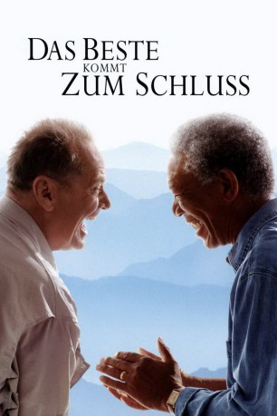

#1521 Das Beste kommt zum Schluss
Alternativ: The Bucket List
 
 IMDB-Wertung: 7.4 / 10
IMDB-Wertung: 7.4 / 10  Metascore: 42
Metascore: 42 
Durch einen traurigen Umstand lernen sich der weiße Milliardär Edward Cole und der afroamerikanische Automechaniker Carter Chambers kennen. Beide haben Krebs und liegen im selben Zimmer eines Krankenhauses. Als sich herausstellt, dass sowohl Cole als auch Chambers nach der Prognose der Ärzte nur noch wenige Monate zu leben haben, versuchen beide, der restlichen Zeit das Maximale abzutrotzen. Eine Liste mit Dingen, die sie vor dem nahen Tod unbedingt noch erledigen wolle, soll ihnen dabei helfen, der erschreckenden Tatsache ins Auge zu blicken. Dank der finanziellen Möglichkeiten Coles setzen die Männer ihre Planung auch gegen private Widerstände in die Tat um. Bei ihrer Reise rund um die Welt lernen sich Cole und Chambers immer besser kennen und entwickeln ein Gespür für die wahren Wünsche des anderen, die sie unterstützen wollen.
Jahr: 2007
Dauer: 97 Minuten
FSK: 0
Land: USA Studio: Warner Bros.Tonspuren: DD5.1 - ,
Untertitel:
Auflösung: 1080p (1920x1072) Größe: 8140 MB
Genre: Abenteuer, Komödie, Drama
Regisseur:  Rob Reiner
Rob Reiner
Drehbuch: Justin Zackham
Soundtrack: Marc Shaiman
Darsteller:
 Jack Nicholson als Edward
Jack Nicholson als Edward Morgan Freeman als Carter
Morgan Freeman als Carter Sean Hayes als Thomas
Sean Hayes als Thomas- Beverly Todd als Virginia
- Rob Morrow als Dr. Hollins
- Alfonso Freeman als Roger
- Rowena King als Angelica
- Ian Anthony Dale als Instructor
- Jennifer Defrancisco als Emily
- Angela Gardner als Female Administrator
 Noel Gugliemi als Mechanic
Noel Gugliemi als Mechanic- Jonathan Hernandez als Manny
- Hugh B. Holub als County Health Director
 Jordan Lund als Tattoo Artist
Jordan Lund als Tattoo Artist Richard McGonagle als Board Chairman
Richard McGonagle als Board Chairman- Jonathan Mangum als Richard
 Karen Maruyama als Nurse Shing
Karen Maruyama als Nurse Shing- Amber Mead als Attractive Woman #1
- Nikki Novak als Attractive Woman #2
- John O'Brien als Executive #1
- Serena Reeder als Rachel
- Christopher Stapleton als Kyle
- Taylor Ann Thompson als Edward's Granddaughter
 Alex Trebek als Himself
Alex Trebek als Himself- Roy Vongtama als Doctor #1
 Lauren Cohn als Denise , uncredited
Lauren Cohn als Denise , uncredited- Frank Maharajh als Sashi Olpadwala , uncredited
- Vin Scully als Himself , uncredited
 George F. Watson als Hospital Review Board Member , uncredited
George F. Watson als Hospital Review Board Member , uncredited- Annton Berry Jr. als Kai
- Verda Bridges als Chandra
- Destiny Brownridge als Maya
- Brian Copeland als Lee
- Andrea Johnson als Elizabeth
- Dawn Lewis als Flight Attendant
- Brent Battles als Jeopardy Grip , uncredited
- Michael J. Gutierrez als Funeral Attendant , uncredited
Datei: X:\2007(A-F)\Beste kommt zum Schluss, Das (2007, FSKo.Al., 1920x1072).mkv seit 13.07.2015
Festplatte: HD 2007(A-Z)-2008(A-F)
 Es gibt insgesamt 65 Filme in der Gruppe '2007(A-F)'
Es gibt insgesamt 65 Filme in der Gruppe '2007(A-F)'